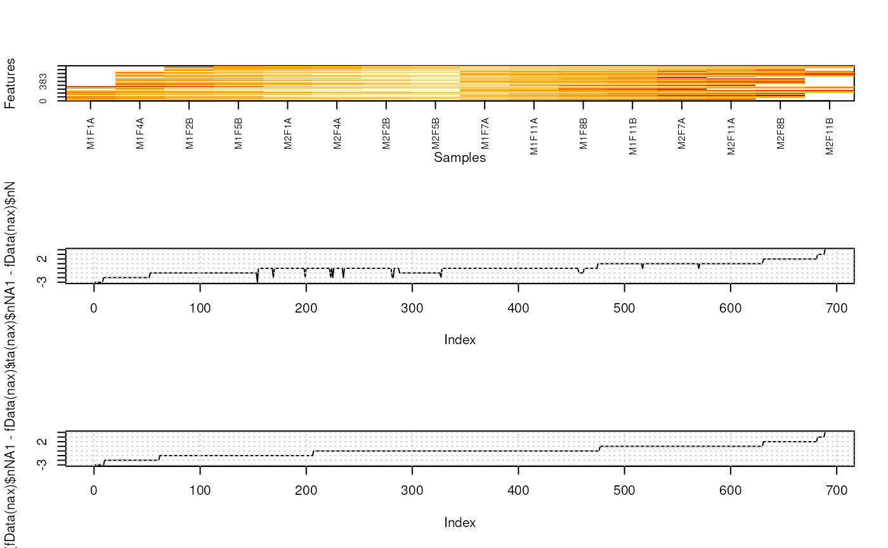
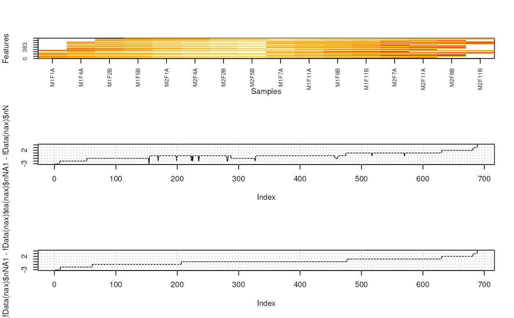
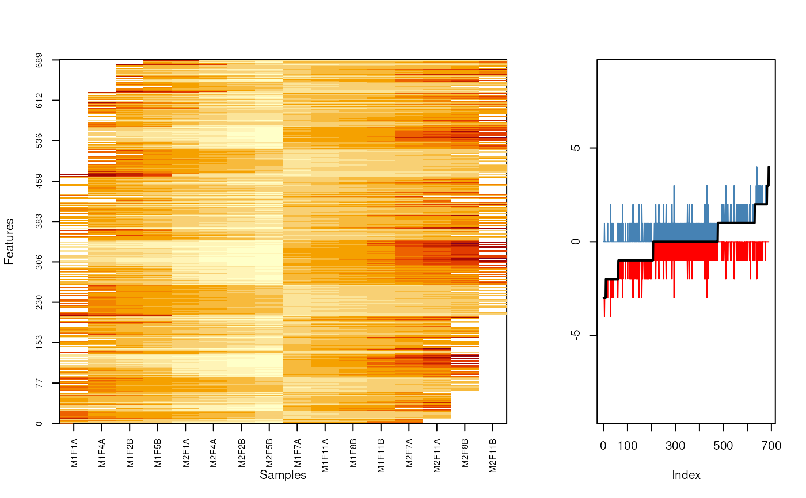
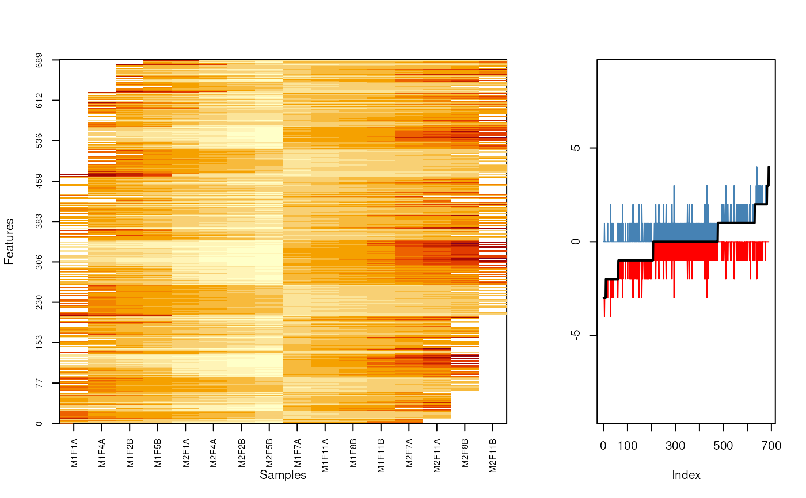

Documenting missing data visualisation
missing-data.RdThere is a need for adequate handling of missing value impuation in
quantitative proteomics. Before developing a framework to handle
missing data imputation optimally, we propose a set of visualisation
tools. This document serves as an internal notebook for current
progress and ideas that will eventually materialise in exported
functionality in the MSnbase package.
Details
The explore the structure of missing values, we propose to
1. Explore missing values in the frame of the experimental design. The
imageNA2 function offers such a simple visualisation. It
is currently limited to 2-group designs/comparisons. In case of time
course experiments or sub-cellular fractionation along a density
gradient, we propose to split the time/gradient into 2 groups
(early/late, top/bottom) as a first approximation.
2. Explore the proportion of missing values in each group.
3. Explore the total and group-wise feature intensity distributions.
The existing plotNA function illustrates the
completeness/missingness of the data.
Examples
## Other suggestions
library("pRolocdata")
library("pRoloc")
data(dunkley2006)
set.seed(1)
nax <- makeNaData(dunkley2006, pNA = 0.10)
pcol <- factor(ifelse(dunkley2006$fraction <= 5, "A", "B"))
sel1 <- pcol == "A"
## missing values in each sample
barplot(colSums(is.na(nax)), col = pcol)
 ## table of missing values in proteins
par(mfrow = c(3, 1))
barplot(table(rowSums(is.na(nax))), main = "All")
barplot(table(rowSums(is.na(nax)[sel1,])), main = "Group A")
barplot(table(rowSums(is.na(nax)[!sel1,])), main = "Group B")
## table of missing values in proteins
par(mfrow = c(3, 1))
barplot(table(rowSums(is.na(nax))), main = "All")
barplot(table(rowSums(is.na(nax)[sel1,])), main = "Group A")
barplot(table(rowSums(is.na(nax)[!sel1,])), main = "Group B")
 fData(nax)$nNA1 <- rowSums(is.na(nax)[, sel1])
fData(nax)$nNA2 <- rowSums(is.na(nax)[, !sel1])
fData(nax)$nNA <- rowSums(is.na(nax))
o <- MSnbase:::imageNA2(nax, pcol)
plot((fData(nax)$nNA1 - fData(nax)$nNA2)[o], type = "l")
grid()
plot(sort(fData(nax)$nNA1 - fData(nax)$nNA2), type = "l")
grid()

o2 <- order(fData(nax)$nNA1 - fData(nax)$nNA2)
MSnbase:::imageNA2(nax, pcol, Rowv=o2)
layout(matrix(c(rep(1, 10), rep(2, 5)), nc = 3))
fData(nax)$nNA1 <- rowSums(is.na(nax)[, sel1])
fData(nax)$nNA2 <- rowSums(is.na(nax)[, !sel1])
fData(nax)$nNA <- rowSums(is.na(nax))
o <- MSnbase:::imageNA2(nax, pcol)
plot((fData(nax)$nNA1 - fData(nax)$nNA2)[o], type = "l")
grid()
plot(sort(fData(nax)$nNA1 - fData(nax)$nNA2), type = "l")
grid()

o2 <- order(fData(nax)$nNA1 - fData(nax)$nNA2)
MSnbase:::imageNA2(nax, pcol, Rowv=o2)
layout(matrix(c(rep(1, 10), rep(2, 5)), nc = 3))
 MSnbase:::imageNA2(nax, pcol, Rowv=o2)
plot((fData(nax)$nNA1 - fData(nax)$nNA)[o2], type = "l", col = "red",
ylim = c(-9, 9), ylab = "")
lines((fData(nax)$nNA - fData(nax)$nNA2)[o2], col = "steelblue")
lines((fData(nax)$nNA1 - fData(nax)$nNA2)[o2], type = "l",
lwd = 2)

MSnbase:::imageNA2(nax, pcol, Rowv=o2)
plot((fData(nax)$nNA1 - fData(nax)$nNA)[o2], type = "l", col = "red",
ylim = c(-9, 9), ylab = "")
lines((fData(nax)$nNA - fData(nax)$nNA2)[o2], col = "steelblue")
lines((fData(nax)$nNA1 - fData(nax)$nNA2)[o2], type = "l",
lwd = 2)
